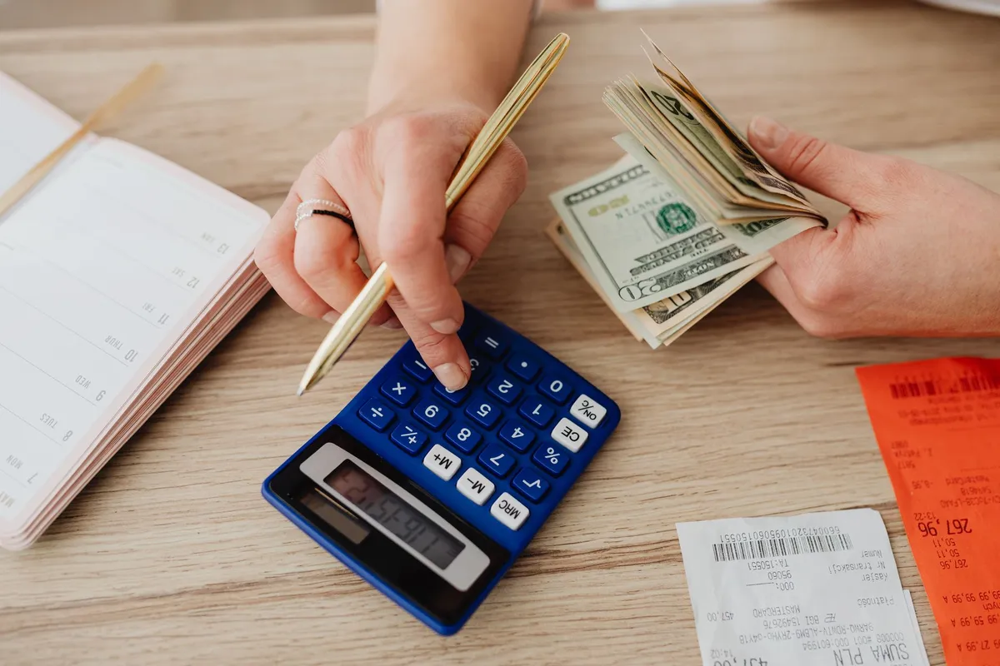

Cardápio digital mais barato do mercado: a conta que ninguém mostra

Quem procura o cardápio digital mais barato do mercado quase sempre compara a coisa errada: o valor da mensalidade. O que decide o custo real é o modelo de cobrança — porque um plano de R$0 com 20% de comissão custa muito mais que R$67 fixos já no primeiro mês razoável de vendas.
Os 3 modelos de preço do mercado
| Modelo | Como cobra | Custo real com R$20 mil/mês |
|---|---|---|
| Marketplace (iFood, apps) | 12% a 30% por pedido | R$2.400 a R$6.000 |
| Plataforma "grátis" | Comissão menor + recursos travados | R$1.000 a R$3.000 |
| Mensalidade fixa (Menuzia) | R$67/mês, sem taxa por pedido | R$67 |
O barato de verdade é o custo que não cresce quando você vende mais. Comissão é o oposto disso: quanto melhor o seu mês, maior a conta.
Por que R$67 fixos é o menor custo por pedido
Divida a mensalidade pelo volume: com 100 pedidos no mês, o Menuzia custa R$0,67 por pedido. Com 500 pedidos, R$0,13. Com 1.000, R$0,067. Já a comissão custa o mesmo percentual no pedido 1 e no pedido 1.000 — ela nunca dilui.
| Pedidos/mês | Custo por pedido (Menuzia) | Custo por pedido (18% em ticket de R$45) |
|---|---|---|
| 100 | R$0,67 | R$8,10 |
| 300 | R$0,22 | R$8,10 |
| 800 | R$0,08 | R$8,10 |
"Barato" que sai caro: o que checar antes de assinar
- Tem taxa por pedido? Se tem, o preço anunciado não é o preço final.
- O que é cobrado à parte? Robô de WhatsApp, impressão, cupom e relatório costumam virar upsell.
- Quem monta o cardápio? Se for você, o custo escondido é o seu tempo — no Menuzia a equipe monta.
- A base de clientes é sua? Sem contato exportável você aluga o cliente todo mês.
- Tem fidelidade ou multa? Barato com contrato longo é caro travado.
Quanto custa o Menuzia
R$67 por mês, valor fixo, sem comissão por pedido. Inclui cardápio digital com fotos, painel de pedidos, taxa de entrega por bairro, pagamento no Pix/cartão/dinheiro, campanhas de WhatsApp, robô de atendimento 24h, gestão de motoboy e configuração feita pela nossa equipe. Com ticket médio de R$45, dois pedidos pagam o mês inteiro.
Barato não é cardápio ruim — é custo previsível
O que faz um cardápio digital ser bom é converter: abrir rápido no celular, ter foto em todo item, fechar o pedido sem fricção e mandar direto pro WhatsApp. Nada disso depende de pagar percentual. Veja a comparação completa em preço de cardápio digital, o checklist do melhor custo-benefício e o plano de cardápio digital barato.
Funciona na minha cidade?
Sim — o atendimento é 100% online, em todo o Brasil. Veja as páginas de São Paulo, Rio de Janeiro, Belo Horizonte ou todas as cidades atendidas.
Buscas relacionadas
O que donos de restaurante e delivery pesquisam antes de contratar — cada busca leva para a página que responde a ela:
Perguntas frequentes
Qual é o cardápio digital mais barato do mercado?
Depende do modelo de cobrança. Entre plataformas que cobram comissão e plataformas de mensalidade fixa, a fixa fica mais barata assim que o faturamento pelo canal passa de poucas centenas de reais. O Menuzia custa R$67 por mês, valor fixo, sem taxa por pedido.
R$67 por mês tem taxa escondida?
Não. Não há comissão por pedido, taxa de instalação nem cobrança por recurso: cardápio, painel, taxa por bairro, campanhas de WhatsApp, robô 24h e suporte estão inclusos.
Cardápio digital barato funciona igual aos caros?
O que faz o cardápio vender é abrir rápido, ter foto, calcular taxa e fechar o pedido no WhatsApp. Isso não depende de preço alto — depende de a plataforma ser feita para celular e ser bem configurada.
A partir de quantos pedidos vale a pena sair da comissão?
Com ticket médio de R$45 e comissão de 18%, cada pedido custa cerca de R$8. Com 9 pedidos no mês a comissão já supera R$67 — daí para cima, tudo o que você deixa de pagar vira lucro.
Tem fidelidade ou multa por cancelar?
Não. É mensal. Você continua enquanto fizer sentido para a sua operação.
Pare de pagar comissão por pedido
Cardápio digital próprio por R$67/mês fixo. Nossa equipe configura pra você e o suporte está incluso.
Criar Meu Cardápio Agora →